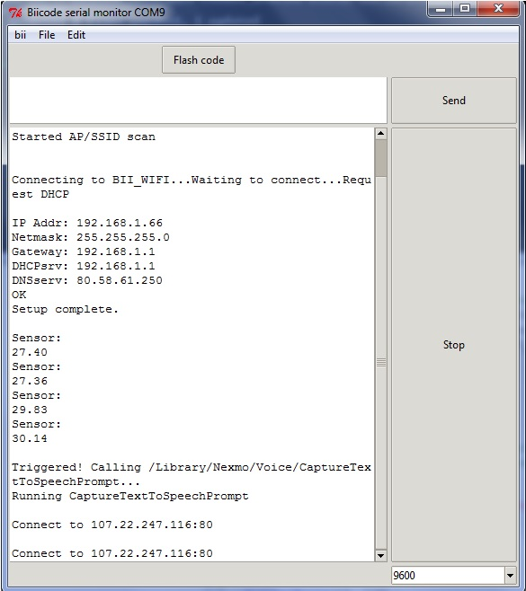

What’s this biiday project about? Get your Arduino to call you whenever the temperature rises!
In this case, we’re going to make our Arduino board call a phone based on the temperature value obtained from the 10-DOF IMU Breakout module, and then remotely control it with the keypad.
To connect to temboo, we’re using the Adafruit CC300 WiFi Module and reusing code from diego/ardunet.

The layout above, was made with fritzing for an Arduino mega 2560.
If you want to make your Arduino make a phone call, we’ve made a new reusable block! . You just need to create a free Nexmo account and reuse from davidvirseda/nexmo block.
Just make sure you have a temboo choreo configured in order to get data from your nexmo account. Start a new project:
1 2 3 | $ bii init project $ cd project ~/project$ bii new username/nexmo --hello=cpp |
Then, just copy and paste the code below into your new main.cpp file to replicate this post:
1 2 3 4 5 6 7 8 9 10 11 12 13 14 15 16 17 18 19 20 21 22 23 24 25 26 27 28 29 30 31 32 33 34 35 36 37 38 39 40 41 42 43 44 45 46 47 48 49 50 51 52 53 54 55 56 57 58 59 60 61 62 63 64 65 66 67 68 69 70 71 72 73 74 75 76 77 | #include <Arduino.h> #include <SPI.h> #include <diego/temboo/temboo.h> #include "tembooaccount.h" // Contains Temboo account information #include "diego/ardunet/cc3000utils.h" #include "diego/ardunet/cc3000client.h" #include "davidvirseda/nexmo/nexmochoreo.h" #include <adafruit/ada_10dof/adafruit_10dof.h> #define ADAFRUIT_CC3000_IRQ 3 // MUST be an interrupt pin! #define ADAFRUIT_CC3000_VBAT 5 #define ADAFRUIT_CC3000_CS 10 /* Assign a unique ID to the sensors */ Adafruit_BMP085_Unified bmp = Adafruit_BMP085_Unified(18001); Adafruit_CC3000 cc3000 = Adafruit_CC3000(ADAFRUIT_CC3000_CS, ADAFRUIT_CC3000_IRQ, ADAFRUIT_CC3000_VBAT, SPI_CLOCK_DIVIDER); CC3000Client client(cc3000); String makeNexmoCall(); // The number of times to trigger the action if the condition is met. // We limit this so you won't use all of your Temboo calls while testing. int maxCalls = 1; // The number of times this Choreo has been run so far in this sketch. int calls = 0; float temperature; void setup() { Serial.begin(9600); // For debugging, wait until the serial console is connected. delay(4000); while(!Serial); startConnection(cc3000, WLAN_SSID, WLAN_PASS, WLAN_SEC_WPA2); Serial.println("OK"); if(!bmp.begin()){ /* There was a problem detecting the BMP085 ... check your connections */ Serial.print("Ooops, no BMP085 detected ... Check your wiring or I2C ADDR!"); while(1); } delay(5000); Serial.println("Setup complete.\n"); } void loop() { bmp.getTemperature(&temperature); Serial.println("Temperature: "); Serial.println(temperature); if (temperature > 30) { if (calls < maxCalls) { Serial.println("\nTriggered! Calling /Library/Nexmo/Voice/CaptureTextToSpeechPrompt..."); TembooChoreo choreo = setupChoreo(client, TEMBOO_ACCOUNT, TEMBOO_APP_KEY_NAME, TEMBOO_APP_KEY ); String choice = makeNexmoCall(choreo, "It's getting hot in here!, Press 1 to turn on A/C", NEXMO_API_KEY, NEXMO_API_SECRET, NUMBER_TO, "1", "Ok, your wish is my command. Goodbye!"); if (choice == "1") { digitalWrite(12, HIGH); Serial.println("A/C is on"); } calls++; } else { Serial.println("\n Triggered! Skipping the action to save Temboo calls during testing."); Serial.println("You can adjust or remove the calls/maxCalls if() statement to change this behavior.\n"); } } delay(10000); digitalWrite(12, LOW); } |
As you can see in this example, the Arduino board will make a phone call whenever the temperature obtained from the 10- DOF IMU Breakout module is higher than 30 degrees.
Customize the temperature that pulls the trigger and adapt the text you want to listen by the phone.
The Temboo, Nexmo and WiFi credentials are stored in “tembooaccount.h”, this file is not publicly visible to keep sensitive data in private, but it’s the header file temboo gives you when you configure your settings, and it should look like this one:
1 2 3 4 5 6 7 8 9 10 11 12 13 14 15 16 17 18 19 20 21 22 23 24 | /* IMPORTANT NOTE about TembooAccount.h TembooAccount.h contains your Temboo account information and must be included alongside your sketch. To do so, make a new tab in Arduino, call it TembooAccount.h, and copy this content into it. */ #define TEMBOO_ACCOUNT "account_name" // Your Temboo account name #define TEMBOO_APP_KEY_NAME "myFirstApp" // Your Temboo app key name #define TEMBOO_APP_KEY "app_key" // Your Temboo app key #define NEXMO_API_KEY "app_key" //Nexmo API Key #define NEXMO_API_SECRET "api_secret" #define NUMBER_TO "number_to_call" #define WLAN_SSID "wifi_ide" #define WLAN_PASS "your_pass_here" #define WLAN_SECURITY WLAN_SEC_WPA2 /* The same TembooAccount.h file settings can be used for all Temboo SDK sketches. Keeping your account information in a separate file means you can share the main .ino file without worrying that you forgot to delete your credentials. */ |
Well, you’re ready to go:
Just push or execute
1 | bii find |
and 
1 | bii arduino:upload |
Let’s see the results with our Arduino Serial Monitor!
It is not necessary to download on install anything manually! Biicode manages to get everything, the temboo library, the 10-DOF IMU adafruit library and the CC3000 adafruit library, the helper functions, etc. and everything is configured automatically.
Temboo has hundreds of services, and using the great adafruit HW components is simple with biicode, so let your imagination fly and build your Internet of Things application!
Related Posts